Contents
- Controller synthesis using SReachPoint for a spacecraft rendezvous problem
- Problem formulation: Stochastic reachability of a target tube
- Dynamics model for the deputy relative to the chief spacecraft
- Target tube definition
- Specifying initial states and which options to run
- Quantities needed to compute the optimal mean trajectory and Monte-Carlo sims
- SReachPoint: chance-open
- SReachPoint: genzps-open
- SReachPoint: particle-open
- SReachPoint: voronoi-open
- SReachPoint: chance-affine
- SReachPoint: chance-affine-uni
- Summary of results
Controller synthesis using SReachPoint for a spacecraft rendezvous problem
This example will demonstrate the use of SReachTools for controller synthesis in a terminal hitting-time stochastic reach-avoid problem. We consider a continuous-state discrete-time linear time-invariant (LTI) system. This example script is part of the SReachTools toolbox, which is licensed under GPL v3 or (at your option) any later version. A copy of this license is given in https://github.com/unm-hscl/SReachTools/blob/master/LICENSE.
In this example script, we discuss how to use SReachPoint to synthesize open-loop controllers and affine-disturbance feedback controllers for the terminal hitting-time stochastic reach-avoid problem. We demonstrate the following solution techniques:
- chance-open: Chance-constrained approach that uses risk allocation and piecewise-affine approximations to formulate a linear program to synthesize an open-loop controller (See Vinod and Oishi, Conference in Decision and Control, 2019 (submitted), Lesser et. al., Conference on Decision and Control, 2013)
- genzps-open: Fourier transforms that uses Genz's algorithm to formulate a nonlinear log-concave optimization problem to be solved using MATLAB's patternsearch to synthesize an open-loop controller (See Vinod and Oishi, Control System Society- Letters, 2017)
- particle-open: Particle control filter approach that formulates a mixed-integer linear program to synthesize an open-loop controller (See Lesser et. al., Conference on Decision and Control, 2013)
- voronoi-open: Particle control filter approach that formulates a mixed-integer linear program to synthesize an open-loop controller. In contrast to particle-open, voronoi-open permits a user-specified upper bound on the overapproximation error in the maximal reach probability and has significant computational advantages due to its undersampling approach. (See Sartipizadeh et. al., American Control Conference, 2019 (accepted))
- chance-affine: Chance-constrained approach that uses risk allocation and piecewise-affine approximations to formulate a difference-of-convex program to synthesize a closed-loop (affine disturbance feedback) controller. The controller synthesis is done by solving a series of second-order cone programs. (See Vinod and Oishi, Conference in Decision and Control, 2019 (submitted))
All computations were performed using MATLAB on an Ubuntu OS running on a laptop with Intel i7 CPU with 2.1GHz clock rate and 8 GB RAM. For sake of clarity, all commands were asked to be verbose (via `SReachPointOptions`). In practice, this can be turned off.
% Prescript running: Initializing srtinit, if it already hasn't been initialized close all;clearvars;srtinit;
Problem formulation: Stochastic reachability of a target tube
Given an initial state 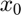, a time horizon 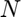, a linear system dynamics 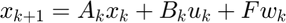 for 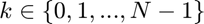, and a target tube  , we wish to design an admissible controller that maximizes the probability of the state staying with the target tube. This maximal reach probability, denoted by 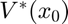, is obtained by solving the following optimization problem
, we wish to design an admissible controller that maximizes the probability of the state staying with the target tube. This maximal reach probability, denoted by 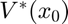, is obtained by solving the following optimization problem
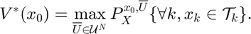
Here,  refers to the control policy which satisfies the control bounds specified by the input space
refers to the control policy which satisfies the control bounds specified by the input space  over the entire time horizon , 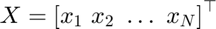 is the concatenated state vector, and the target tube is a sequence of sets . Here, 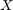 is a random vector with probability measure
over the entire time horizon , 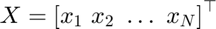 is the concatenated state vector, and the target tube is a sequence of sets . Here, 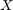 is a random vector with probability measure  which is a parameterized by the initial state and policy .
which is a parameterized by the initial state and policy .
In the general formulation requires is given by a sequence of (potentially time-varying and nonlinear) state-feedback controllers. To compute such a policy, we have to resort to dynamic programming which suffers from the curse of dimensionality. See these papers for details Abate et. al, Automatica, 2008, Summers and Lygeros, Automatica, 2010, and Vinod and Oishi, IEEE Trans. Automatic Control, 2018 (submitted).
SReachPoint provides multiple ways to compute an underapproximation of by restricting the search to the following controllers:
- open-loop controller: The controller provides a sequence of control actions
![$\overline{U}={[u_0\ u_1\ \ldots\ u_{N-1}]}^\top\in \mathcal{U}^N$](cwhSReachPoint_eq02166279874784551509.png) parameterized only by the initial state. This controller does not account for the actual state realization and therefore can be conservative. However, computing this control sequence is easy due to known convexity properties of the problem. See Vinod and Oishi, IEEE Trans. Automatic Control, 2018 (submitted) for more details. Apart from particle-open, all approaches provide guaranteed underapproximations or underapproximations to a user-specifed error.
parameterized only by the initial state. This controller does not account for the actual state realization and therefore can be conservative. However, computing this control sequence is easy due to known convexity properties of the problem. See Vinod and Oishi, IEEE Trans. Automatic Control, 2018 (submitted) for more details. Apart from particle-open, all approaches provide guaranteed underapproximations or underapproximations to a user-specifed error. - affine-disturbance feedback controller: The controller is a characterized by an affine transformation of the concatenated disturbance vector. The gain matrix is forced to be lower-triangular for the causality, resulting in the control action at 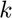 be dependent only the past disturbance values. Here, the control action at time 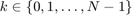 is given by 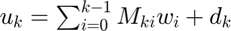. We optimize for 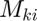 and 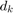 for every 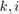, and the controller is given by 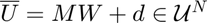, with 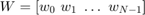 denoting the concatenated disturbance random vector. By construction, is now random, and it can not satisfy hard control bounds with non-zero and unbounded 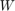. Therefore, we relax the control bound constraints
 to a chance constraint, 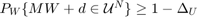 permitting the user to specify the probabilistic violation
to a chance constraint, 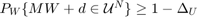 permitting the user to specify the probabilistic violation  of the control bounds. We then construct a lower bound for the maximal reach probability when the affine disturbance feedback controller is used under saturation to meet the hard control bounds. In contrast to the open-loop controller synthesis, affine disturbance feedback controller synthesis is a non-convex problem, and we obtain a locally optimal solution using difference-of-convex programming.
of the control bounds. We then construct a lower bound for the maximal reach probability when the affine disturbance feedback controller is used under saturation to meet the hard control bounds. In contrast to the open-loop controller synthesis, affine disturbance feedback controller synthesis is a non-convex problem, and we obtain a locally optimal solution using difference-of-convex programming.
All of our approaches are grid-free resulting in highly scalable solutions, especially for Gaussian-perturbed linear systems.
In this example, we perform controller synthesis that maximizes the probability of a deputy spacecraft to rendezvous with a chief spacecraft while staying within a line-of-sight cone.

Dynamics model for the deputy relative to the chief spacecraft
We consider both the spacecrafts to be in the same circular orbit. The relative planar dynamics of the deputy with respect to the chief are described by the Clohessy-Wiltshire-Hill (CWH) equations,

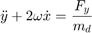
where the position of the deputy relative to the chief is 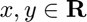, 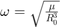 is the orbital frequency, 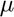 is the gravitational constant, and  is the orbital radius of the chief spacecraft. We define the state as
is the orbital radius of the chief spacecraft. We define the state as ![$\overline{x} = {[x\ y\ \dot{x}\ \dot{y}]}^\top \in \mathbf{R}^{4}$](cwhSReachPoint_eq10872751811371042055.png) which is the position and velocity of the deputy relative to the chief along 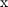- and 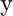- axes, and the input as 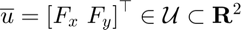.
which is the position and velocity of the deputy relative to the chief along 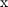- and 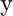- axes, and the input as 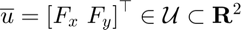.
We will discretize the CWH dynamics in time, via zero-order hold, to obtain the discrete-time linear time-invariant system and add a Gaussian disturbance to account for the modeling uncertainties and the disturbance forces,

with 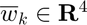 as an IID Gaussian zero-mean random process with a known covariance matrix 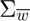.
umax = 0.1; mean_disturbance = zeros(4,1); covariance_disturbance = diag([1e-4, 1e-4, 5e-8, 5e-8]); % Define the CWH (planar) dynamics of the deputy spacecraft relative to the % chief spacecraft as a LtiSystem object sys = getCwhLtiSystem(4, Polyhedron('lb', -umax*ones(2,1), ... 'ub', umax*ones(2,1)), ... RandomVector('Gaussian', mean_disturbance,covariance_disturbance));
Target tube definition
We define the target tube to be a collection of time-varying boxes 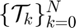 where is the time horizon.
In this problem, we define 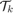 to be line-of-sight cone originating from origin (location of the chief spacecraft) for and the terminal target set 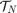 as a box around the origin. This special sequence of target sets allows us to impose a reach-avoid specification of safety.
time_horizon = 5; % Stay within a line of sight cone for 4 time steps and % reach the target at t=5% Safe Set --- LoS cone % Safe set definition --- LoS cone |x|<=y and y\in[0,ymax] and |vx|<=vxmax and % |vy|<=vymax ymax = 2; vxmax = 0.5; vymax = 0.5; A_safe_set = [1, 1, 0, 0; -1, 1, 0, 0; 0, -1, 0, 0; 0, 0, 1,0; 0, 0,-1,0; 0, 0, 0,1; 0, 0, 0,-1]; b_safe_set = [0; 0; ymax; vxmax; vxmax; vymax; vymax]; safe_set = Polyhedron(A_safe_set, b_safe_set); % Target set --- Box [-0.1,0.1]x[-0.1,0]x[-0.01,0.01]x[-0.01,0.01] target_set = Polyhedron('lb', [-0.1; -0.1; -0.01; -0.01], ... 'ub', [0.1; 0; 0.01; 0.01]); target_tube = Tube('reach-avoid',safe_set, target_set, time_horizon);
Specifying initial states and which options to run
chance_open_run = 1; genzps_open_run = 1; particle_open_run = 1; voronoi_open_run = 1; chance_affine_run = 1; chance_affine_uni_run = 1; % Initial state definition initial_state = [-0.75; % Initial x relative position -0.75; % Initial y relative position 0; % Initial x relative velocity 0]; % Initial y relative velocity slice_at_vx_vy = initial_state(3:4); % Initial states for each of the method init_state_chance_open = initial_state; init_state_genzps_open = initial_state; init_state_particle_open = initial_state; init_state_voronoi_open = initial_state; init_state_chance_affine = initial_state; init_state_chance_affine_uni = initial_state;
Quantities needed to compute the optimal mean trajectory and Monte-Carlo sims
We first compute the dynamics of the concatenated state vector  , and compute the concatentated random vector and its mean.
, and compute the concatentated random vector and its mean.
[Z,H,G] = sys.getConcatMats(time_horizon); % Compute the mean trajectory of the concatenated disturbance vector muW = sys.dist.concat(time_horizon).mean(); % Number of Monte-Carloo simulations to use: We will use a lower simulation % count for the affine controllers so that its saturation will not take a lot of % time n_mcarlo_sims = 1e5; n_mcarlo_sims_affine = 1e5;
SReachPoint: chance-open
This method is discussed in Vinod and Oishi, Conference in Decision and Control, 2019 (submitted). It was introduced for stochastic reachability in Lesser et. al., Conference on Decision and Control, 2013.
This approach implements the chance-constrained approach to compute an optimal open-loop controller. It uses risk allocation and piecewise-affine overapproximation of the inverse normal cumulative density function to formulate a linear program for this purpose. Naturally, this is one of the fastest ways to compute an open-loop controller and an underapproximative probabilistic guarantee of safety. However, due to the use of Boole's inequality for risk allocation, it provides a conservative estimate of safety using the open-loop controller.
if chance_open_run fprintf('\n\nSReachPoint with chance-open\n'); % Set the maximum piecewise-affine overapproximation error to 1e-3 ccO_opts = SReachPointOptions('term', 'chance-open','pwa_accuracy',1e-3); tic; [prob_chance_open, opt_input_vec_chance_open] = SReachPoint('term', ... 'chance-open', sys, init_state_chance_open, target_tube, ccO_opts); elapsed_time_chance_open = toc; if prob_chance_open % Optimal mean trajectory construction % mean_X = Z * x_0 + H * U + G * \mu_W opt_mean_X_chance_open = Z * init_state_chance_open + ... H * opt_input_vec_chance_open + G * muW; opt_mean_traj_chance_open = reshape(opt_mean_X_chance_open, ... sys.state_dim,[]); % Check via Monte-Carlo simulation concat_state_realization_ccc = generateMonteCarloSims(n_mcarlo_sims, ... sys, init_state_chance_open, time_horizon,... opt_input_vec_chance_open); mcarlo_result = target_tube.contains(concat_state_realization_ccc); simulated_prob_chance_open = sum(mcarlo_result)/n_mcarlo_sims; else simulated_prob_chance_open = NaN; end fprintf('SReachPoint underapprox. prob: %1.2f | Simulated prob: %1.2f\n',... prob_chance_open, simulated_prob_chance_open); fprintf('Computation time (s): %1.3f\n', elapsed_time_chance_open); end
SReachPoint with chance-open SReachPoint underapprox. prob: 0.87 | Simulated prob: 0.86 Computation time (s): 0.353
SReachPoint: genzps-open
This method is discussed in Vinod and Oishi, Control System Society- Letters, 2017.
This approach implements the Fourier transform-based approach to compute an optimal open-loop controller. It uses Genz's algorithm to compute the probability of safety and optimizes the joint chance constraint involved in maximizing this probability. To handle the noisy behaviour of the Genz's algorithm, we rely on MATLAB's patternsearch for the nonlinear optimization. Internally, we use the chance-open to initialize the nonlinear solver. Hence, this approach will return an open-loop controller with safety at least as good as chance-open.
if genzps_open_run fprintf('\n\nSReachPoint with genzps-open\n'); genzps_opts = SReachPointOptions('term', 'genzps-open', ... 'PSoptions',psoptimset('display','iter'), 'desired_accuracy', 5e-2); tic [prob_genzps_open, opt_input_vec_genzps_open] = SReachPoint('term', ... 'genzps-open', sys, init_state_genzps_open, target_tube, genzps_opts); elapsed_time_genzps = toc; if prob_genzps_open > 0 % Optimal mean trajectory construction % mean_X = Z * x_0 + H * U + G * \mu_W opt_mean_X_genzps_open = Z * init_state_genzps_open + ... H * opt_input_vec_genzps_open + G * muW; opt_mean_traj_genzps_open= reshape(opt_mean_X_genzps_open, ... sys.state_dim,[]); % Check via Monte-Carlo simulation concat_state_realization_genz = generateMonteCarloSims(n_mcarlo_sims,... sys, init_state_genzps_open, time_horizon,... opt_input_vec_genzps_open); mcarlo_result = target_tube.contains(concat_state_realization_genz); simulated_prob_genzps_open = sum(mcarlo_result)/n_mcarlo_sims; else simulated_prob_genzps_open = NaN; end fprintf('SReachPoint underapprox. prob: %1.2f | Simulated prob: %1.2f\n',... prob_genzps_open, simulated_prob_genzps_open); fprintf('Computation time (s): %1.3f\n', elapsed_time_genzps); end
SReachPoint with genzps-open
Iter Func-count f(x) MeshSize Method
0 1 0.162519 1
1 1 0.162519 0.5 Refine Mesh
2 1 0.162519 0.25 Refine Mesh
3 1 0.162519 0.125 Refine Mesh
4 9 0.162519 0.0625 Refine Mesh
5 22 0.162519 0.03125 Refine Mesh
6 35 0.162519 0.01562 Refine Mesh
7 48 0.162519 0.007812 Refine Mesh
8 61 0.162519 0.003906 Refine Mesh
9 74 0.162519 0.001953 Refine Mesh
10 87 0.162519 0.0009766 Refine Mesh
11 107 0.162519 0.0004883 Refine Mesh
12 127 0.162519 0.0002441 Refine Mesh
13 147 0.162519 0.0001221 Refine Mesh
14 167 0.162519 6.104e-05 Refine Mesh
15 187 0.162519 3.052e-05 Refine Mesh
16 207 0.162519 1.526e-05 Refine Mesh
17 227 0.162519 7.629e-06 Refine Mesh
18 247 0.162519 3.815e-06 Refine Mesh
19 267 0.162519 1.907e-06 Refine Mesh
20 287 0.162519 9.537e-07 Refine Mesh
Optimization terminated: mesh size less than options.MeshTolerance.
SReachPoint underapprox. prob: 0.85 | Simulated prob: 0.87
Computation time (s): 17.471
SReachPoint: particle-open
This method is discussed in Lesser et. al., Conference on Decision and Control, 2013.
This approach implements the particle control approach to compute an open-loop controller. It is a sampling-based technique and hence the resulting probability estimate is random with its variance going to zero as the number of samples considered goes to infinity. Note that since a mixed-integer linear program is solved underneath with the number of binary variables corresponding to the number of particles, using too many particles can cause an exponential increase in computational time.
if particle_open_run fprintf('\n\nSReachPoint with particle-open\n'); paO_opts = SReachPointOptions('term','particle-open','verbose', 1,... 'n_particles',50); tic [prob_particle_open, opt_input_vec_particle_open] = SReachPoint('term', ... 'particle-open', sys, init_state_particle_open, target_tube, paO_opts); elapsed_time_particle = toc; if prob_particle_open > 0 % Optimal mean trajectory construction % mean_X = Z * x_0 + H * U + G * \mu_W opt_mean_X_particle_open = Z * init_state_particle_open + ... H * opt_input_vec_particle_open + G * muW; opt_mean_traj_particle_open =... reshape(opt_mean_X_particle_open, sys.state_dim,[]); % Check via Monte-Carlo simulation concat_state_realization_pa = generateMonteCarloSims(n_mcarlo_sims, ... sys, init_state_particle_open,time_horizon,... opt_input_vec_particle_open); mcarlo_result = target_tube.contains(concat_state_realization_pa); simulated_prob_particle_open = sum(mcarlo_result)/n_mcarlo_sims; else simulated_prob_particle_open = NaN; end fprintf('SReachPoint approx. prob: %1.2f | Simulated prob: %1.2f\n',... prob_particle_open, simulated_prob_particle_open); fprintf('Computation time (s): %1.3f\n', elapsed_time_particle); end
SReachPoint with particle-open Required number of particles: 50 Creating random variable realizations....Done Setting up CVX problem....Done Parsing and solving the MILP....Done SReachPoint approx. prob: 0.82 | Simulated prob: 0.82 Computation time (s): 1.564
SReachPoint: voronoi-open
This method is discussed in Sartipizadeh, et. al., American Control Conference, 2019 (submitted)
This approach implements the undersampled particle control approach to compute an open-loop controller. It computes, using k-means, a representative sample realization of the disturbance which is significantly smaller. This drastically improves the computational efficiency of the particle control approach. Further, because it uses Hoeffding's inequality, the user can specify an upper-bound on the overapproximation error. The undersampled probability estimate is used to create a lower bound of the solution corresponding to the original particle control problem with appropriate (typically large) number of particles. Thus, this has all the benefits of the particle-open option, with additional benefits of being able to specify a maximum overapproximation error as well being computationally tractable.
if voronoi_open_run fprintf('\n\nSReachPoint with voronoi-open\n'); voO_opts = SReachPointOptions('term','voronoi-open','verbose',1,... 'max_overapprox_err', 1e-2); tic [prob_voronoi_open, opt_input_vec_voronoi_open, kmeans_info_open] = ... SReachPoint('term', 'voronoi-open', sys, init_state_voronoi_open,... target_tube, voO_opts); elapsed_time_voronoi = toc; if prob_voronoi_open > 0 % Optimal mean trajectory construction % mean_X = Z * x_0 + H * U + G * \mu_W opt_mean_X_voronoi_open = Z * init_state_voronoi_open + ... H * opt_input_vec_voronoi_open + G * muW; opt_mean_traj_voronoi_open =... reshape(opt_mean_X_voronoi_open, sys.state_dim,[]); % Check via Monte-Carlo simulation concat_state_realization_vo = generateMonteCarloSims(n_mcarlo_sims, ... sys, init_state_voronoi_open,time_horizon,... opt_input_vec_voronoi_open); mcarlo_result = target_tube.contains(concat_state_realization_vo); simulated_prob_voronoi_open = sum(mcarlo_result)/n_mcarlo_sims; else simulated_prob_voronoi_open = NaN; end fprintf('SReachPoint approx. prob: %1.2f | Simulated prob: %1.2f\n',... prob_voronoi_open, simulated_prob_voronoi_open); fprintf('Computation time (s): %1.3f\n', elapsed_time_voronoi); end
SReachPoint with voronoi-open Required number of particles: 4.6052e+04 | Samples used: 30 Creating random variable realizations....Done Using k-means for undersampling....Done Setting up CVX problem....Done Parsing and solving the MILP....Done Undersampled probability (with 30 particles): 0.410 Underapproximation to the original MILP (with 46052 particles): 0.851 SReachPoint approx. prob: 0.85 | Simulated prob: 0.86 Computation time (s): 4.413
SReachPoint: chance-affine
This method is discussed in Vinod and Oishi, Conference in Decision and Control, 2019 (submitted).
This approach implements the chance-constrained approach to compute a locally optimal affine disturbance feedback controller. In contrast to chance-open, this approach optimizes for an affine feedback gain for the concatenated disturbance vector as well as a bias. The resulting optimization problem is non-convex, and SReachTools formulates a difference-of-convex program to solve this optimization problem to a local optimum. Since affine disturbance feedback controllers can not satisfy hard control bounds, we relax the control bounds to be probabilistically violated with at most a probability of 0.01. After obtaining the affine feedback controller, we compute a lower bound to the maximal reach probability in the event saturation is applied to satisfy the hard control bounds. Due to its incorporation of state-feedback, this approach typically permits the construction of the highest underapproximative probability guarantee.
if chance_affine_run fprintf('\n\nSReachPoint with chance-affine\n'); ccA_opts = SReachPointOptions('term', 'chance-affine',... 'max_input_viol_prob', 1e-2, 'verbose', 1); tic [prob_chance_affine, opt_input_vec_chance_affine,... opt_input_gain_chance_affine] = SReachPoint('term', 'chance-affine',... sys, init_state_chance_affine, target_tube, ccA_opts); elapsed_time_chance_affine = toc; fprintf('Computation time (s): %1.3f\n', elapsed_time_chance_affine); if prob_chance_affine > 0 % mean_X = Z * x_0 + H * (M \mu_W + d) + G * \mu_W opt_mean_X_chance_affine = Z * init_state_chance_affine +... H * opt_input_vec_chance_affine + ... (H * opt_input_gain_chance_affine + G) * muW; % Optimal mean trajectory construction opt_mean_traj_chance_affine = reshape(opt_mean_X_chance_affine, ... sys.state_dim,[]); % Check via Monte-Carlo simulation concat_state_realization_cca = generateMonteCarloSims(... n_mcarlo_sims_affine, sys, init_state_chance_affine, ... time_horizon, opt_input_vec_chance_affine,... opt_input_gain_chance_affine, 1); mcarlo_result = target_tube.contains(concat_state_realization_cca); simulated_prob_chance_affine = sum(mcarlo_result)/n_mcarlo_sims_affine; else simulated_prob_chance_affine = NaN; end fprintf('SReachPoint underapprox. prob: %1.2f | Simulated prob: %1.2f\n',... prob_chance_affine, simulated_prob_chance_affine); end
SReachPoint with chance-affine Computation time (s): 19.163 Getting 100000 realizations...Done Computing the reach probability associated with the given controller via 1.00e+05 Monte-Carlo simulation Affine disturbance feedback controller will be saturated to the input space via projection Using Polyhedron/contains to identify realizations that require saturation...Done Input constraint violation probability: 0.0019 We need to saturate 188 realizations. We will provide progress in 5 quantiles. Completed saturating 38/ 188 input realizations Completed saturating 76/ 188 input realizations Completed saturating 114/ 188 input realizations Completed saturating 152/ 188 input realizations SReachPoint underapprox. prob: 1.00 | Simulated prob: 1.00
SReachPoint: chance-affine-uni
This method is adapted from Vitus and Tomlin, Conference in Decision and Control, 2011.
This approach implements the chance-constrained approach to compute a locally optimal affine disturbance feedback controller. In contrast to chance-open, this approach optimizes for an affine feedback gain for the concatenated disturbance vector as well as a bias. The resulting optimization problem is non-convex. In contrast to chance-affine, risk allocation is assumed to be uniform. A bisection is performed at over possible risk allocations. The bisection is guided by the feasibility of the resulting second-order cone program, which can be solved efficiently. This solution converges to a local optimum. It is faster than chance-affine, but can fail in some cases. Since affine disturbance feedback controllers can not satisfy hard control bounds, we relax the control bounds to be probabilistically violated with at most a probability of 0.01. After obtaining the affine feedback controller, we compute a lower bound to the maximal reach probability in the event saturation is applied to satisfy the hard control bounds. Due to its incorporation of state-feedback, this approach typically permits the construction of the highest underapproximative probability guarantee.
if chance_affine_uni_run fprintf('\n\nSReachPoint with chance-affine-uni\n'); ccAu_opts = SReachPointOptions('term', 'chance-affine-uni',... 'max_input_viol_prob', 1e-2, 'verbose', 1); tic [prob_chance_affine_uni, opt_input_vec_chance_affine_uni,... opt_input_gain_chance_affine_uni] = SReachPoint('term', ... 'chance-affine-uni', sys, init_state_chance_affine_uni, ... target_tube, ccAu_opts); elapsed_time_chance_affine_uni = toc; fprintf('Computation time (s): %1.3f\n', elapsed_time_chance_affine_uni); if prob_chance_affine_uni > 0 % mean_X = Z * x_0 + H * (M \mu_W + d) + G * \mu_W opt_mean_X_chance_affine_uni = Z * init_state_chance_affine_uni +... H * opt_input_vec_chance_affine_uni + ... (H * opt_input_gain_chance_affine_uni + G) * muW; % Optimal mean trajectory construction opt_mean_traj_chance_affine_uni = reshape(opt_mean_X_chance_affine_uni, ... sys.state_dim,[]); % Check via Monte-Carlo simulation concat_state_realization_cca_uni = generateMonteCarloSims(... n_mcarlo_sims_affine, sys, init_state_chance_affine_uni, ... time_horizon, opt_input_vec_chance_affine_uni,... opt_input_gain_chance_affine_uni, 1); mcarlo_result = target_tube.contains(concat_state_realization_cca_uni); simulated_prob_chance_affine_uni = ... sum(mcarlo_result)/n_mcarlo_sims_affine; else simulated_prob_chance_affine_uni = NaN; end fprintf('SReachPoint underapprox. prob: %1.2f | Simulated prob: %1.2f\n',... prob_chance_affine_uni, simulated_prob_chance_affine_uni); end
SReachPoint with chance-affine-uni Safety prob: 0.500, Input viol: 0.005 | CVX status: Solved Safety prob: 0.750, Input viol: 0.005 | CVX status: Solved Safety prob: 0.875, Input viol: 0.005 | CVX status: Solved Safety prob: 0.938, Input viol: 0.005 | CVX status: Solved Safety prob: 0.969, Input viol: 0.005 | CVX status: Solved Safety prob: 0.984, Input viol: 0.005 | CVX status: Solved Safety prob: 0.992, Input viol: 0.005 | CVX status: Solved Safety prob: 0.996, Input viol: 0.005 | CVX status: Solved Safety prob: 0.998, Input viol: 0.005 | CVX status: Solved Safety prob: 0.999, Input viol: 0.005 | CVX status: Solved Computation time (s): 2.244 Getting 100000 realizations...Done Computing the reach probability associated with the given controller via 1.00e+05 Monte-Carlo simulation Affine disturbance feedback controller will be saturated to the input space via projection Using Polyhedron/contains to identify realizations that require saturation...Done Input constraint violation probability: 0.0002 We need to saturate 20 realizations. We will provide progress in 5 quantiles. Completed saturating 4/ 20 input realizations Completed saturating 8/ 20 input realizations Completed saturating 12/ 20 input realizations Completed saturating 16/ 20 input realizations Completed saturating 20/ 20 input realizations SReachPoint underapprox. prob: 1.00 | Simulated prob: 1.00
Summary of results
For ease of comparison, we list the probability estimates, the Monte-Carlo simulation validations, and the computation times once again. We also plot the mean trajectories.
dims_to_consider = [1,2]; figure(101); clf; hold on; h_safe_set = plot(safe_set.slice([3,4], slice_at_vx_vy), 'color', 'y'); h_target_set = plot(target_set.slice([3,4], slice_at_vx_vy), 'color', 'g'); h_init_state = scatter(initial_state(1),initial_state(2),200,'k^'); legend_cell = {'Safe set','Target set','Initial state'}; axis equal h_vec = [h_safe_set, h_target_set, h_init_state]; % Plot the optimal mean trajectory from the vertex under study if chance_open_run && prob_chance_open > 0 h_opt_mean_ccc = scatter(... [init_state_chance_open(1), opt_mean_traj_chance_open(1,:)], ... [init_state_chance_open(2), opt_mean_traj_chance_open(2,:)], ... 30, 'bo', 'filled','DisplayName', 'Mean trajectory (chance-open)'); legend_cell{end+1} = 'Mean trajectory (chance-open)'; h_vec(end+1) = h_opt_mean_ccc; ellipsoidsFromMonteCarloSims(... concat_state_realization_ccc(sys.state_dim+1:end,:), sys.state_dim,... dims_to_consider, {'b'}); disp('>>> SReachPoint with chance-open') fprintf('SReachPoint underapprox. prob: %1.2f | Simulated prob: %1.2f\n',... prob_chance_open, simulated_prob_chance_open); fprintf('Computation time (s): %1.3f\n', elapsed_time_chance_open); end if genzps_open_run && prob_genzps_open > 0 h_opt_mean_genzps = scatter(... [init_state_genzps_open(1), opt_mean_traj_genzps_open(1,:)], ... [init_state_genzps_open(2), opt_mean_traj_genzps_open(2,:)], ... 50, 'kd','DisplayName', 'Mean trajectory (genzps-open)'); legend_cell{end+1} = 'Mean trajectory (genzps-open)'; h_vec(end+1) = h_opt_mean_genzps; ellipsoidsFromMonteCarloSims(... concat_state_realization_genz(sys.state_dim+1:end,:), sys.state_dim,... dims_to_consider, {'k'}); disp('>>> SReachPoint with genzps-open') fprintf('SReachPoint underapprox. prob: %1.2f | Simulated prob: %1.2f\n',... prob_genzps_open, simulated_prob_genzps_open); fprintf('Computation time (s): %1.3f\n', elapsed_time_genzps); end if particle_open_run && prob_particle_open > 0 h_opt_mean_particle = scatter(... [init_state_particle_open(1), opt_mean_traj_particle_open(1,:)], ... [init_state_particle_open(2), opt_mean_traj_particle_open(2,:)], ... 30, 'r^', 'filled','DisplayName', 'Mean trajectory (particle-open)'); legend_cell{end+1} = 'Mean trajectory (particle-open)'; h_vec(end+1) = h_opt_mean_particle; ellipsoidsFromMonteCarloSims(... concat_state_realization_pa(sys.state_dim+1:end,:), sys.state_dim,... dims_to_consider, {'r'}); disp('>>> SReachPoint with particle-open') fprintf('SReachPoint approx. prob: %1.2f | Simulated prob: %1.2f\n',... prob_particle_open, simulated_prob_particle_open); fprintf('Computation time (s): %1.3f\n', elapsed_time_particle); end if voronoi_open_run && prob_voronoi_open > 0 h_opt_mean_voronoi = scatter(... [init_state_voronoi_open(1), opt_mean_traj_voronoi_open(1,:)], ... [init_state_voronoi_open(2), opt_mean_traj_voronoi_open(2,:)], ... 30, 'cv', 'filled','DisplayName', 'Mean trajectory (voronoi-open)'); legend_cell{end+1} = 'Mean trajectory (voronoi-open)'; h_vec(end+1) = h_opt_mean_voronoi; ellipsoidsFromMonteCarloSims(... concat_state_realization_vo(sys.state_dim+1:end,:), sys.state_dim,... dims_to_consider, {'c'}); disp('>>> SReachPoint with voronoi-open') fprintf('SReachPoint approx. prob: %1.2f | Simulated prob: %1.2f\n',... prob_voronoi_open, simulated_prob_voronoi_open); fprintf('Computation time (s): %1.3f\n', elapsed_time_voronoi); end if chance_affine_run && prob_chance_affine > 0 h_opt_mean_chance_affine = scatter(... [init_state_chance_affine(1), opt_mean_traj_chance_affine(1,:)], ... [init_state_chance_affine(2), opt_mean_traj_chance_affine(2,:)], ... 30, 'ms', 'filled','DisplayName', 'Mean trajectory (chance-affine)'); legend_cell{end+1} = 'Mean trajectory (chance-affine)'; h_vec(end+1) = h_opt_mean_chance_affine; ellipsoidsFromMonteCarloSims(... concat_state_realization_cca(sys.state_dim+1:end,:), sys.state_dim,... dims_to_consider, {'m'}); disp('>>> SReachPoint with chance-affine') fprintf('SReachPoint underapprox. prob: %1.2f | Simulated prob: %1.2f\n',... prob_chance_affine, simulated_prob_chance_affine); fprintf('Computation time (s): %1.3f\n', elapsed_time_chance_affine); end if chance_affine_uni_run && prob_chance_affine_uni > 0 h_opt_mean_chance_affine_uni = scatter(... [init_state_chance_affine_uni(1), opt_mean_traj_chance_affine_uni(1,:)], ... [init_state_chance_affine_uni(2), opt_mean_traj_chance_affine_uni(2,:)], ... 30, 'kd', 'filled','DisplayName', 'Mean trajectory (chance-affine-uni)'); legend_cell{end+1} = 'Mean trajectory (chance-affine-uni)'; h_vec(end+1) = h_opt_mean_chance_affine_uni; ellipsoidsFromMonteCarloSims(... concat_state_realization_cca_uni(sys.state_dim+1:end,:), sys.state_dim,... dims_to_consider, {'k'}); disp('>>> SReachPoint with chance-affine-uni') fprintf('SReachPoint underapprox. prob: %1.2f | Simulated prob: %1.2f\n',... prob_chance_affine_uni, simulated_prob_chance_affine_uni); fprintf('Computation time (s): %1.3f\n', elapsed_time_chance_affine_uni); end legend(h_vec, legend_cell, 'Location','EastOutside', 'interpreter','latex'); title(['Ellipsoids fit 100 random Monte-Carlo sims.']); axis equal box on; grid on; xlabel('$x$','interpreter','latex'); ylabel('$y$','interpreter','latex'); set(gca,'FontSize',20); axis([initial_state(1)-0.1,-initial_state(1)+0.1,initial_state(2)-0.1,0.1]); hf = gcf; hf.Units = 'inches'; hf.Position = [0 0.4167 18.0000 10.0313];
>>> SReachPoint with chance-open SReachPoint underapprox. prob: 0.87 | Simulated prob: 0.86 Computation time (s): 0.353 >>> SReachPoint with genzps-open SReachPoint underapprox. prob: 0.85 | Simulated prob: 0.87 Computation time (s): 17.471 >>> SReachPoint with particle-open SReachPoint approx. prob: 0.82 | Simulated prob: 0.82 Computation time (s): 1.564 >>> SReachPoint with voronoi-open SReachPoint approx. prob: 0.85 | Simulated prob: 0.86 Computation time (s): 4.413 >>> SReachPoint with chance-affine SReachPoint underapprox. prob: 1.00 | Simulated prob: 1.00 Computation time (s): 19.163 >>> SReachPoint with chance-affine-uni SReachPoint underapprox. prob: 1.00 | Simulated prob: 1.00 Computation time (s): 2.244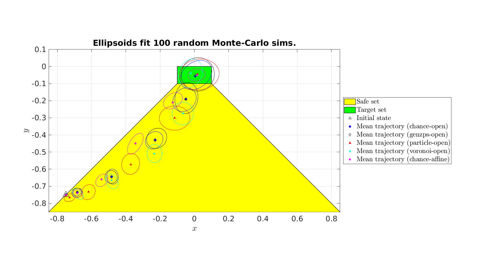